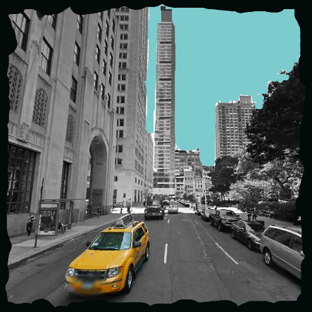
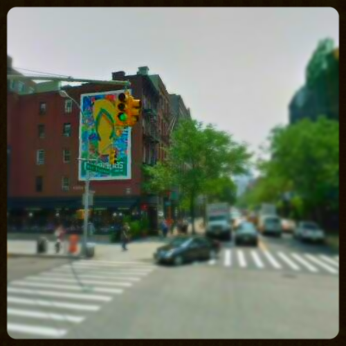

street view editor
 
1. Choose a location.
Fill in just the location box first, then try altering the other parameters. The locations entered for the two photos above are, respectively,
'madison square park nyc' and 'houston and laguardia nyc'.
location:
compass:
zoom:
angle:
2. Edit your photo: